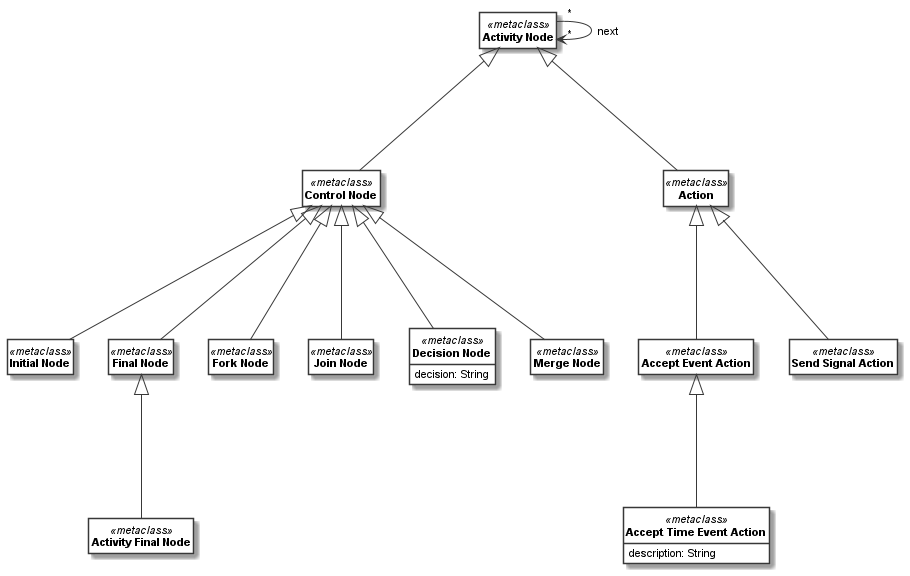

A first meta-model¶
Defining a basic meta-model¶
Basic meta-modelling in Codeable Models is very similar to class modelling. Instead of CClass, used
to define classes, we use CMetaclass to define meta-classes.
As a first example of a meta-model, let us consider a simple meta-model for basic features of
activity models defined in the folder metamodels of the Codeable Models distribution:
activity_node = CMetaclass("Activity Node")
control_node = CMetaclass("Control Node", superclasses=activity_node)
initial_node = CMetaclass("Initial Node", superclasses=control_node)
final_node = CMetaclass("Final Node", superclasses=control_node)
activity_final_node = CMetaclass("Activity Final Node", superclasses=final_node)
fork_node = CMetaclass("Fork Node", superclasses=control_node)
join_node = CMetaclass("Join Node", superclasses=control_node)
decision_node = CMetaclass("Decision Node", superclasses=control_node,
attributes={"decision": str})
merge_node = CMetaclass("Merge Node", superclasses=control_node)
action = CMetaclass("Action", superclasses=activity_node)
accept_event_action = CMetaclass("Accept Event Action", superclasses=action)
accept_time_event_action = CMetaclass("Accept Time Event Action",
superclasses=accept_event_action,
attributes={"description": str})
send_signal_action = CMetaclass("Send Signal Action", superclasses=action)
edge_relation = activity_node.association(activity_node, "next: [source] * -> [target] *")
Here, we first define a number of node types, which are needed to define an activity model. activity_node
is the common superclass of all of them, and it has one association edge_relation to itself, defined
on the last line. edge_relation is used to define the directed links between nodes. Some of the nodes have
attributes, such as the decision_node.
We can use the the Plant UML class model renderer to draw the resulting model. The result is:
{kind=link}
This image has been rendered using the following code:
activity_metamodel_all = CBundle("activity_metamodel_all",
elements=activity_node.get_connected_elements(
add_stereotypes=True))
generator = PlantUMLGenerator()
generator.generate_class_models("activityMetamodel", [activity_metamodel_all, {}])
Deriving a class model modelled in a class diagram¶
Next, let us create a class model with activities for filling a shopping cart based on the meta-model defined above. Below are the classes needed for a model inspired by a model from uml-diagrams.org.
Please note that class models derived from meta-models can be further used to derive object models. If this is intended, usually a class model is modeled and then depicted in class diagram notation, which is explained in this section. An alternative way to depict classes as instances of meta-class is to show them in an instance model (object diagram) of the meta-class. This is explained in the next section.
First we define all required nodes of our class model:
initial_node_shopping_cart = CClass(initial_node, "[Initial]")
decision_node_search_browse = CClass(decision_node, "Search or Browse?")
merge_node_search = CClass(merge_node, "[Merge]")
search_item = CClass(activity_node, "Search Items")
merge_node_browse = CClass(merge_node, "[Merge]")
browse_item = CClass(activity_node, "Browse Items")
decision_node_found = CClass(decision_node, "Item Found?", values={"decision": "Item found?"})
merge_node_view_item = CClass(merge_node, "[Merge]")
view_item = CClass(activity_node, "View Item")
decision_node_decision_made = CClass(decision_node, "Decision Made?", values={"decision": "Decision made?"})
add_to_shopping_cart = CClass(activity_node, "Add to Shopping Cart")
decision_node_proceed = CClass(decision_node, "Proceed?")
merge_node_view_shopping_cart = CClass(merge_node, "[Merge]")
view_shopping_cart = CClass(activity_node, "View Shopping Cart")
decision_node_done = CClass(decision_node, "Done?")
update_shopping_cart = CClass(activity_node, "Update Shopping Cart")
checkout = CClass(activity_node, "Checkout")
final_node_shopping_cart = CClass(final_node, "[Final]")
checkout_merge_node = CClass(merge_node, "[Merge]")
check_shopping_cart = CClass(accept_event_action, "Check Shopping Cart")
proceed_to_checkout = CClass(accept_event_action, "Proceed to Checkout")
Next we add numerous associations between those classes to connect the classes into a complex process model:
for source, targets in {initial_node_shopping_cart: [decision_node_search_browse],
merge_node_search: [search_item],
merge_node_browse: [browse_item],
search_item: [decision_node_found],
browse_item: [merge_node_view_item],
merge_node_view_item: [decision_node_search_browse, view_item],
view_item: [decision_node_decision_made],
decision_node_decision_made: [merge_node_search, merge_node_browse],
add_to_shopping_cart: [decision_node_proceed],
update_shopping_cart: [decision_node_proceed],
merge_node_view_shopping_cart: [view_shopping_cart],
view_shopping_cart: [decision_node_done],
check_shopping_cart: [merge_node_view_shopping_cart],
proceed_to_checkout: [checkout_merge_node],
checkout_merge_node: [checkout],
checkout: [final_node_shopping_cart]}.items():
for target in targets:
source.association(target, source_multiplicity="1", multiplicity="1", derived_from=edge_relation)
decision_node_search_browse.association(merge_node_search, name="[search]", source_multiplicity="1", multiplicity="1",
derived_from=edge_relation)
decision_node_search_browse.association(merge_node_browse, name="[browse]", source_multiplicity="1", multiplicity="1",
derived_from=edge_relation)
decision_node_found.association(merge_node_view_item, name="[found]", source_multiplicity="1", multiplicity="1",
derived_from=edge_relation)
decision_node_found.association(decision_node_search_browse, name="[not found]", source_multiplicity="1",
multiplicity="1", derived_from=edge_relation)
decision_node_decision_made.association(add_to_shopping_cart, name="[made decision]", source_multiplicity="1",
multiplicity="1", derived_from=edge_relation)
decision_node_proceed.association(merge_node_view_shopping_cart, name="[view cart]", source_multiplicity="1",
multiplicity="1", derived_from=edge_relation)
decision_node_proceed.association(decision_node_search_browse, name="[proceed]", source_multiplicity="1",
multiplicity="1", derived_from=edge_relation)
decision_node_done.association(decision_node_search_browse, name="[more shopping]", source_multiplicity="1",
multiplicity="1", derived_from=edge_relation)
decision_node_done.association(update_shopping_cart, name="[update needed]", source_multiplicity="1", multiplicity="1",
derived_from=edge_relation)
decision_node_done.association(checkout_merge_node, name="[done with shopping]", source_multiplicity="1",
multiplicity="1", derived_from=edge_relation)
Please note that we connect each of the associations in this code to the corresponding meta-class association
edge_relation. This is done using the method derived_from, in a similar way as we link the class to its
metaclass in a class definition. A derived association has a number of constraints imposed by the
meta-class association:
An association can be derived from a metaclass association, if the association is of the same type, i.e., both are
either association, composition, or aggregation. Both for source and target multiplicities,
the lower multiplicity must be equal or higher than the metaclass association’s lower multiplicity, and the
upper multiplicity must be equal or lower than the metaclass association’s upper multiplicity.
Here all multiplicities are 1 -- 1 because an instance-level process model should be instantiated without
further levels of freedom in this regard. But, for example, if instance models of this class diagram could
decide if they want to have parallel executions of a specific task, then offering a 1 -- * multiplicity
could be modelled here as well.
We can next use the class model renderer to create a class diagram:
shopping_activity_class_model = CBundle("shopping_activity_class_model",
elements=initial_node_shopping_cart.get_connected_elements())
generator = PlantUMLGenerator()
generator.class_model_renderer.left_to_right = True
generator.generate_class_models(shopping_activity_class_model.name,
[shopping_activity_class_model, {"render_metaclass_as_stereotype": True}])
Please note that we use the option render_metaclass_as_stereotype to show the metaclass the class was
derived from as a stereotype, so that we can see the relation class-metaclass in the resulting diagram as stereotypes.
This creates the following model:

The full code of this example in this tutorial can be found in the sample Shopping Activity Model 1 as Class Model.
Deriving a class model modelled as an instance model¶
Next, let us create the same class model as an metaclass-instance model (which can be depicted as object diagram with classes as metaclass instances as objects). That is, while showing class models as class diagrams is the usual way to depict derived classes, an alternative way to depict classes as instances of metaclasses is to show them in an instance model (object diagram) of the metaclass. This is explained in this section. This method is useful if you want to show a (maybe complex) instance-level relation of (maybe multiple) classes that maybe shall be depicted in a class diagram using a single relation. For example, the UML standard sometimes uses instance model of the UML meta-model to show the detailed interactions of the metaclass instances, and then introduces higher-level associations and/or new notations to abstract relations of a couple of classes and their links.
To enable comparison, here we want to show the same model as the one from the previous section. Again, first we define all required nodes:
initial_node_shopping_cart = CClass(initial_node)
decision_node_search_browse = CClass(decision_node)
merge_node_search = CClass(merge_node)
search_item = CClass(activity_node, "Search Items")
merge_node_browse = CClass(merge_node)
browse_item = CClass(activity_node, "Browse Items")
decision_node_found = CClass(decision_node, values={"decision": "Item found?"})
merge_node_view_item = CClass(merge_node)
view_item = CClass(activity_node, "View Item")
decision_node_decision_made = CClass(decision_node, values={"decision": "Decision made?"})
add_to_shopping_cart = CClass(activity_node, "Add to Shopping Cart")
decision_node_proceed = CClass(decision_node)
merge_node_view_shopping_cart = CClass(merge_node)
view_shopping_cart = CClass(activity_node, "View Shopping Cart")
decision_node_done = CClass(decision_node)
update_shopping_cart = CClass(activity_node, "Update Shopping Cart")
checkout = CClass(activity_node, "Checkout")
final_node_shopping_cart = CClass(final_node)
checkout_merge_node = CClass(merge_node)
check_shopping_cart = CClass(accept_event_action, "Check Shopping Cart")
proceed_to_checkout = CClass(accept_event_action, "Proceed to Checkout")
Next we add all links (instead of associations used in the previous section) that have no labels in one go:
add_links({
initial_node_shopping_cart: decision_node_search_browse,
merge_node_search: search_item,
merge_node_browse: browse_item,
search_item: decision_node_found,
browse_item: merge_node_view_item,
merge_node_view_item: decision_node_search_browse,
merge_node_view_item: view_item,
view_item: decision_node_decision_made,
decision_node_decision_made: [merge_node_search, merge_node_browse],
add_to_shopping_cart: decision_node_proceed,
update_shopping_cart: decision_node_proceed,
merge_node_view_shopping_cart: view_shopping_cart,
view_shopping_cart: decision_node_done,
check_shopping_cart: merge_node_view_shopping_cart,
proceed_to_checkout: checkout_merge_node,
checkout_merge_node: checkout,
checkout: final_node_shopping_cart,
}, role_name="target")
Finally, we add the links which have labels:
decision_node_search_browse.add_links(merge_node_search, label="[search]", role_name="target")
decision_node_search_browse.add_links(merge_node_browse, label="[browse]", role_name="target")
decision_node_found.add_links(merge_node_view_item, label="[found]", role_name="target")
decision_node_found.add_links(decision_node_search_browse, label="[not found]", role_name="target")
decision_node_decision_made.add_links(add_to_shopping_cart, label="[made decision]", role_name="target")
decision_node_proceed.add_links(merge_node_view_shopping_cart, label="[view cart]", role_name="target")
decision_node_proceed.add_links(decision_node_search_browse, label="[proceed]", role_name="target")
decision_node_done.add_links(decision_node_search_browse, label="[more shopping]", role_name="target")
decision_node_done.add_links(update_shopping_cart, label="[update needed]", role_name="target")
decision_node_done.add_links(checkout_merge_node, label="[done with shopping]", role_name="target")
With this we have interconnected the class objects with links based on the meta-class association. We thus can use the object model renderer to create an object model with classes as instances and meta-classes as classifiers:
shopping_activity_model = CBundle("shopping_activity_model",
elements=initial_node_shopping_cart.class_object.get_connected_elements())
generator = PlantUMLGenerator()
generator.object_model_renderer.left_to_right = True
generator.generate_object_models("shopping_activity_model", [shopping_activity_model, {}])
Please note that we need to compute the connected elements of the class object of one of the classes here,
not one of the classes, as we want to visualize the links of the class (object) not
its associations. That is, initial_node_shopping_cart.get_connected_elements() would
yield the class relations such as class associations (as e.g. defined in the example in the previous section).
This creates the following model:

The full code of this object-level model can be found in the sample Shopping Activity Model 1 as Instance Model.
Introspecting the classes relations¶
A meta-class has various methods that can be used to introspect the classes relation that manages its instances.
First of all, the getter classes returns a list of all classes directly defined based on a meta-class.
all_classes returns a list of all classes based on a meta-class, including those defined based on its
sub-classes:
print(f"Activity node classes: {activity_node.classes!s}")
print(f"Activity node all classes: {activity_node.all_classes!s}")
This would print something like:
Activity node classes: [<codeable_models.cclass.CClass object at 0x000001E3F490D148>: Search Items, <codeable_models.cclass.CClass object at 0x000001E3F490D948>: Browse Items, <codeable_models.cclass.CClass object at 0x000001E3F4910508>: View Item, <codeable_models.cclass.CClass object at 0x000001E3F4916848>: Add to Shopping Cart, <codeable_models.cclass.CClass object at 0x000001E3F4924048>: View Shopping Cart, <codeable_models.cclass.CClass object at 0x000001E3F4924648>: Update Shopping Cart, <codeable_models.cclass.CClass object at 0x000001E3F4924908>: Checkout]
Activity node classes: [<codeable_models.cclass.CClass object at 0x000001E3F490D148>: Search Items, <codeable_models.cclass.CClass object at 0x000001E3F490D948>: Browse Items, <codeable_models.cclass.CClass object at 0x000001E3F4910508>: View Item, <codeable_models.cclass.CClass object at 0x000001E3F4916848>: Add to Shopping Cart, <codeable_models.cclass.CClass object at 0x000001E3F4924048>: View Shopping Cart, <codeable_models.cclass.CClass object at 0x000001E3F4924648>: Update Shopping Cart, <codeable_models.cclass.CClass object at 0x000001E3F4924908>: Checkout, <codeable_models.cclass.CClass object at 0x000001E3F490D308>, <codeable_models.cclass.CClass object at 0x000001E3F490D848>, <codeable_models.cclass.CClass object at 0x000001E3F490DDC8>, <codeable_models.cclass.CClass object at 0x000001E3F4916D48>, <codeable_models.cclass.CClass object at 0x000001E3F4924E88>, <codeable_models.cclass.CClass object at 0x000001E3F47DDB48>, <codeable_models.cclass.CClass object at 0x000001E3F4924BC8>, <codeable_models.cclass.CClass object at 0x000001E3F486BF08>, <codeable_models.cclass.CClass object at 0x000001E3F490DB88>, <codeable_models.cclass.CClass object at 0x000001E3F4910048>, <codeable_models.cclass.CClass object at 0x000001E3F4916A48>, <codeable_models.cclass.CClass object at 0x000001E3F4924348>, <codeable_models.cclass.CClass object at 0x000001E3F49271C8>: Check Shopping Cart, <codeable_models.cclass.CClass object at 0x000001E3F4927488>: Proceed to Checkout]
In addition, get_classes(name) gets all classes directly derived from this meta-class that have the specified name,
and get_class(name) gets a class directly derived from this meta-class that has the specified name.
Changing the classes relations¶
Classes can be added or removed from a meta-class. For example, with remove_class(class) we can remove one
class from the meta-class, and then we can add a maybe different class with add_class(class).
The code of the introspection examples in this tutorial can be found in the sample Shopping Activity Model 1 as Instance Model (and also in Shopping Activity Model 1 as Class Model).